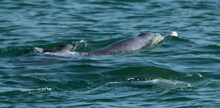
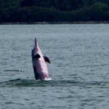
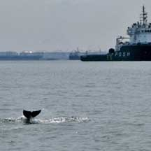
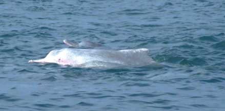

|
|
| vertebrates text index | photo index |
| Phylum Chordata > Subphylum Vertebrata > Class Mammalia |
| Indo-Pacific
hump-backed dolphin Sousa chinensis Family Delphinidae updated Oct 2019 Where seen? These marvellous creatures are still regularly sighted in the waters of our Southern Islands. According to Davison, these dolphins have been observed among our Southern Islands in the Singapore Straits, as well as near our northern shores in the Johor Straits. Globally, they are found in Africa, Asia and Australia, in seas, estuaries and river mouths. They have been seen in freshwater and upstream in large rivers. According to Lee and Ooi (June 2020), in discussing the dolphins seen off Jurong Island, "the occurrence of dolphins in such a highly urbanized marine environment could be due to fairly good water quality there as waterpollution has been cited as a major threat to this locally ‘endangered’ dolphin. It has been shown that the waters around the southern coast of Singapore Island, despite being more industrialised, are less polluted in terms of bacteria, chemical tracers and pathogenic vibrios compared to the Johor Strait along the northern coast. This may explain why most sightings of this dolphin species has been in the Singapore Strait and the eastern Johor Strait." |
 St John's Island, Aug 17 Photos by Jonathan Tan on facebook. |
 Off Pulau Semakau, Jun 09 Photos by Karenne Tun shared on Neo Mei Lin's blog. |
| Features: Head and body
length 120-280cm, up to about 140kg. Long narrow jaws filled with
teeth, broad tail flukes (45cm), with a dorsal fisn (15cm tall) and
pectoral fins (30cm). Colours may be brown, grey, black above and
paler beneath. Some may be whitish, speckled or freckled. They are
sometimes also called Pink dolphins. What does it eat? Feeds mainly on fish, as well as cephalopods (octopus, squid and cuttlefish). |
 Off Pulau Semakau, Jun 09 Photos by Karenne Tun shared on Neo Mei Lin's blog. |
 Off Sisters Islands, May 07 Photo shared by CK Tan on the habitatnews flickr |
|
| Dolphin babies: Baby dolphins
are about 100cm long at birth and suckle on their mother's milk for
about two years. Status and threats: This dolphin is listed as 'Endangered' in the Red List of threatened animals of Singapore. Like many other marine mammals, these dolphins are threatened by drowning in fishing lines and fishing nets. They are also affected by pollution and loss of feeding habitats due to reclamation, coastal development and human activities on our coasts and seas. |
| Singapore wild marine mammal survey (marine mammal identification sheet) from Ria Tan |
videoclips of dolphins on Singapore shores
|
Links
Past sightings of dolphins in Singapore: newspapers
Past sightings of dolphins in Singapore: social media
References
|